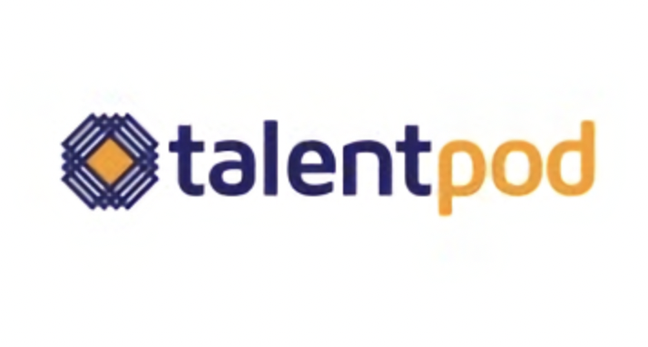

Implemented different time series models to predict Uber Eats data for the next 7 days such as city-wise gross bookings, web sessions etc.
Built a Long Short Term Memory Network and Bayesian Neural Network implementation that provides time series prediction along with uncertainty estimation.
Implemented and analysed classical time-series models such Autoregressive Integrated Moving Average, Exponential Smoothings and packages such as Prophet (Facebook Open Source), orbit (Uber Open Source) to find the best fit model for predictive forecasting.
Collaborated with Uber's in-house ML platform Michelangelo.

Built a Django web application with a user's social media reliant MongoDB database and a TensorFlow powered low level cognitive filtering news recommendation system.
Used news APIs for searching and retrieving live articles from all over the web with various criteria such as keywords, phrases, date published, relevancy where the queries and keywords were extracted from user's emails such as keywords in the sender/receiver, subject, tf-idf ranked keywords in the mail body.
Experimented with libraries such as NLTK, TensorFlow, Keras, scikit-learn for better classification, keyword extraction, and document analysis to improve the relevancy between the news articles and the user's mails.